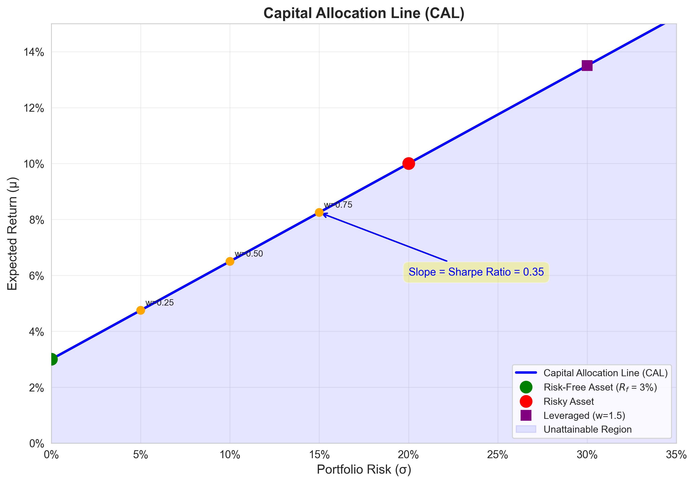
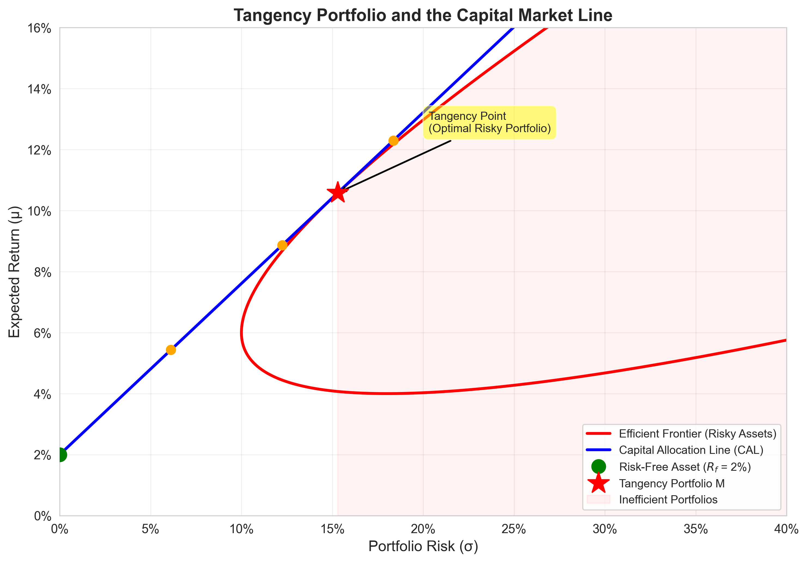
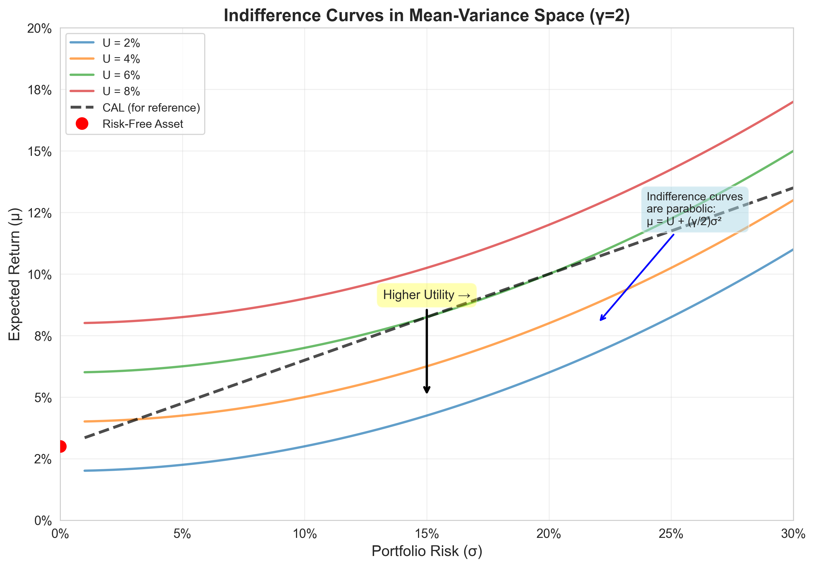
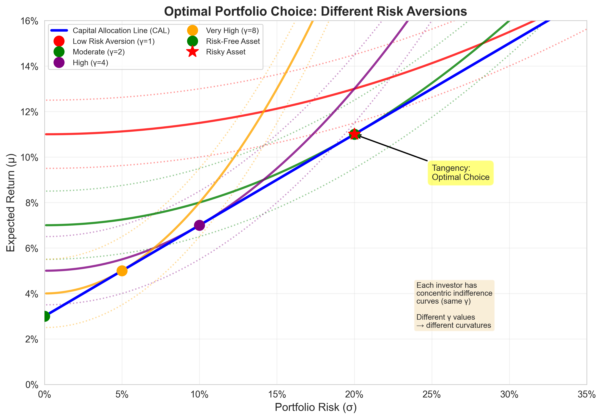

Sukrit Mittal Franklin Templeton Investments
So far, all portfolios involved only risky assets.
That world is incomplete.
In reality, investors can always:
Ignoring this option distorts everything.
The risk-free asset is not an abstraction.
It is a foundational building block of modern finance.
Let:
Portfolio return:
\[ R_p = wR + (1-w)R_f \]
This is the simplest mixed portfolio.
Yet it already contains profound insights.
Taking expectations:
\[ \mathbb{E}[R_p] = w\mathbb{E}[R] + (1-w)R_f = w\mu + (1-w)R_f \]
Rearranging:
\[ \mu_p = R_f + w(\mu - R_f) \]
Interpretation: * Base return: \(R_f\) (certain) * Risk premium: \(w(\mu - R_f)\) (proportional to exposure)
The investor earns a premium only for bearing risk.
Linear in \(w\). Nothing surprising yet.
Since \(R_f\) is constant, it has zero variance:
\[ \sigma_p^2 = \text{Var}(wR + (1-w)R_f) = w^2 \text{Var}(R) = w^2\sigma^2 \]
Therefore:
\[ \sigma_p = |w|\sigma \]
Key insight: All risk comes from the risky asset.
The risk-free asset contributes zero to portfolio volatility.
Risk scales linearly with exposure.
Case 1: \(0 < w < 1\) (Lending) * Invest partially in risky asset * Lend the rest at \(R_f\) * Conservative strategy
Case 2: \(w = 1\) * 100% in risky asset * No borrowing or lending
Case 3: \(w > 1\) (Borrowing) * Borrow at rate \(R_f\) * Invest more than initial wealth in risky asset * Levered strategy
Case 4: \(w < 0\) * Short the risky asset * Invest proceeds in risk-free asset * Extremely conservative
From the previous slide: * \(\mu_p = R_f + w(\mu - R_f)\) * \(\sigma_p = |w|\sigma\)
Solve for \(w\) from the second equation:
\[ w = \frac{\sigma_p}{\sigma} \]
Substitute into the first equation:
\[ \mu_p = R_f + \frac{\sigma_p}{\sigma}(\mu - R_f) \]
Rearranging:
\[ \boxed{\mu_p = R_f + \frac{\mu - R_f}{\sigma} \sigma_p} \]
This is the Capital Allocation Line (CAL).
The CAL is a straight line in \((\sigma, \mu)\) space.
\[ \mu_p = R_f + \frac{\mu - R_f}{\sigma} \sigma_p \]
The slope is called the Sharpe Ratio:
\[ \text{Sharpe Ratio} = \frac{\mu - R_f}{\sigma} \]
Interpretation: * Measures excess return per unit of volatility * Higher Sharpe ratio = better risk-adjusted performance * Universal metric for comparing investment strategies
Markets reward efficiency, not bravery.

Key observations:
The investor’s problem: choose a point on the CAL.
We derived:
\[ \mu_p = R_f + \frac{\mu - R_f}{\sigma} \sigma_p \]
This is a linear equation in \(\sigma_p\).
Why linearity?
Contrast with risky assets only: * Two risky assets form a hyperbola in \((\sigma, \mu)\) space * Adding \(R_f\) “straightens” the efficient frontier
This geometric simplification is the power of the risk-free asset.
When multiple risky assets exist:
The CAL becomes:
\[ \mu_p = R_f + \frac{\mu_M - R_f}{\sigma_M} \sigma_p \]
This line is tangent to the efficient frontier of risky assets.
Theorem: Every investor, regardless of risk preferences, holds: 1. The same optimal risky portfolio \(M\) 2. Some amount of the risk-free asset
Only the mix \((w, 1-w)\) differs across investors.
Implications: * Preferences determine how much risk to take * Preferences do not determine which risky assets to hold * All investors agree on the composition of \(M\)
This is one of the most powerful results in finance.
It justifies index funds and passive investing.

The geometry reveals the economics.
To choose among portfolios on the CAL, we need a model of preferences.
Finance borrows this machinery from economics.
We assume investors care about:
These two dimensions define the decision space.
Nothing exotic. Pure rationality.
Preferences are represented by a utility function:
\[ U(\mu, \sigma^2) = \mu - \frac{\gamma}{2}\sigma^2 \]
Where: * \(U\) = utility (satisfaction level) * \(\mu\) = expected return * \(\sigma^2\) = variance * \(\gamma > 0\) = risk aversion coefficient
Interpretation: * Utility increases with expected return * Utility decreases with variance * \(\gamma\) measures the trade-off rate
This is not psychology.
It is tractable mathematics.
The parameter \(\gamma\) determines risk tolerance.
Different investors = different \(\gamma\) values.
Same mathematics, different parameters.
An indifference curve is the set of \((\sigma, \mu)\) pairs yielding equal utility.
Set \(U\) to a constant \(\bar{U}\):
\[ \bar{U} = \mu - \frac{\gamma}{2}\sigma^2 \]
Solve for \(\mu\):
\[ \mu = \bar{U} + \frac{\gamma}{2}\sigma^2 \]
This is a parabola in \((\sigma, \mu)\) space.
Opening upward, with vertex on the \(\mu\)-axis.
Geometry replaces psychology.

The investor seeks the highest attainable curve.
From \(U = \mu - \frac{\gamma}{2}\sigma^2\), differentiate implicitly holding \(U\) constant:
\[ dU = 0 = d\mu - \gamma\sigma \, d\sigma \]
Rearranging:
\[ \frac{d\mu}{d\sigma} = \gamma\sigma \]
Interpretation: * The slope is the marginal rate of substitution between risk and return * It increases with \(\sigma\) (convexity) * It increases with \(\gamma\) (risk aversion)
At \(\sigma = 0\): Slope is zero (flat) * No risk, no required compensation
As \(\sigma\) increases: Slope rises * Higher risk demands disproportionately higher return
The investor’s problem:
\[ \max_{w} \quad U(\mu_p, \sigma_p^2) = \mu_p - \frac{\gamma}{2}\sigma_p^2 \]
Subject to: * \(\mu_p = R_f + w(\mu - R_f)\) * \(\sigma_p = w\sigma\)
Substitute into utility:
\[ U(w) = R_f + w(\mu - R_f) - \frac{\gamma}{2}(w\sigma)^2 \]
This is an unconstrained optimization problem in \(w\).
Take the first-order condition:
\[ \frac{dU}{dw} = (\mu - R_f) - \gamma w \sigma^2 = 0 \]
Solve for \(w^*\):
\[ \boxed{w^* = \frac{\mu - R_f}{\gamma \sigma^2}} \]
Interpretation: * Optimal exposure increases with risk premium \((\mu - R_f)\) * Optimal exposure decreases with risk aversion \(\gamma\) * Optimal exposure decreases with variance \(\sigma^2\)
This is the fundamental portfolio allocation formula.
Check the second derivative:
\[ \frac{d^2U}{dw^2} = -\gamma \sigma^2 < 0 \]
Since \(\gamma > 0\) and \(\sigma^2 > 0\), the second derivative is negative.
Therefore, \(w^*\) is a maximum, not a minimum.
The solution is verified.
Suppose: * \(R_f = 3\%\) * \(\mu = 10\%\) * \(\sigma = 20\%\) * \(\gamma = 2\) (moderate risk aversion)
Optimal weight:
\[ w^* = \frac{0.10 - 0.03}{2 \times 0.20^2} = \frac{0.07}{2 \times 0.04} = \frac{0.07}{0.08} = 0.875 \]
Interpretation: * Invest 87.5% in the risky asset * Invest 12.5% in the risk-free asset
Portfolio characteristics: * \(\mu_p = 0.03 + 0.875(0.10 - 0.03) = 0.09125 = 9.125\%\) * \(\sigma_p = 0.875 \times 0.20 = 0.175 = 17.5\%\)
How does \(w^*\) change with parameters?
\[ w^* = \frac{\mu - R_f}{\gamma \sigma^2} \]
These relationships are intuitive.
The mathematics merely formalizes common sense.
The optimal portfolio occurs where:
At the tangency point: * Slope of CAL = Slope of indifference curve
CAL slope: \(\frac{\mu - R_f}{\sigma}\)
Indifference curve slope: \(\gamma \sigma_p = \gamma w^* \sigma\)
Setting them equal:
\[ \frac{\mu - R_f}{\sigma} = \gamma w^* \sigma \]
Solving for \(w^*\):
\[ w^* = \frac{\mu - R_f}{\gamma \sigma^2} \]
Geometry and calculus agree.
As they must.

Same risky portfolio.
Different mixing proportions.
This result is deep, old, and still misunderstood.
Given: * Risk-free rate: \(R_f = 2\%\) * Risky asset expected return: \(\mu = 9\%\) * Risky asset standard deviation: \(\sigma = 15\%\) * Risk aversion: \(\gamma = 3\)
Tasks: 1. Derive the optimal weight \(w^*\) in the risky asset 2. Calculate the expected return and risk of the optimal portfolio 3. How does \(w^*\) change if \(\gamma\) doubles?
An investor has utility function \(U = \mu - 2\sigma^2\).
Tasks: 1. Derive the equation of an indifference curve with utility \(U = 0.05\) 2. Calculate the slope of this curve at \(\sigma = 0.10\) 3. If the CAL has slope \(0.4\), at what value of \(\sigma\) does tangency occur? 4. What is the optimal portfolio return at this tangency?
Two assets have: * \(\mu_1 = 6\%\), \(\sigma_1 = 12\%\) * \(\mu_2 = 14\%\), \(\sigma_2 = 25\%\) * \(\rho_{12} = 0.2\)
Tasks: 1. Find the weights for a portfolio with target return \(\mu_p = 10\%\) 2. Calculate the variance of this portfolio 3. Find the minimum variance portfolio (no target return) 4. Compare the two portfolios’ risk levels
Prove that the tangency portfolio (from \(R_f\) to the efficient frontier) maximizes the Sharpe ratio among all risky portfolios.
Hint: Use the fact that at tangency, the slope of the CAL equals the slope of the efficient frontier.
Tasks: 1. Set up the optimization problem 2. Use Lagrange multipliers to find the tangency portfolio 3. Show that this portfolio has the highest Sharpe ratio 4. Interpret the result economically
Next lecture: We extend this framework to multi-asset portfolios and derive the full efficient frontier.